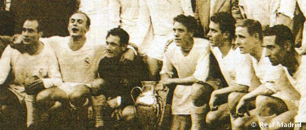

وكان هذا العقد أكثر من رائع بالنسبة للفريق الملكي. فبوجود عدد كبير من اللاعبين البارزين تحت قيادة الفريدو دي ستيفانو وصل ريال مدريد في قمة كرة القدم. وقد أذهل الفريق الملكي الذي حصل على حمس كؤوس أوروبية متتالية العالم بفضل لعبه المذهل ولاعبيه المتألقين. وشهد النادي موجة غير منتهية من النجاحات الشرعية ليكتسب صفقة أكثر الفرق الأوروبية نجاحا. وتم تكريمه بـ: ملك الملوك" وهو ما زاد عليه الفريق برفع كأس الانتركونتيننتال (التي نظمها كل من الاتحاد الأوروبي لكرة القدم و اتحاد أمريكا الجنوبية لكرة القدم ( في طبعتها الأولى في عام 1960.

واكتسب كرة القدم الأوروبية في تلك المرحلة ابعادا مذهلة، وانطلاقا من ادراكه لذلك، اقترح أذهل الصحفي الفرنسي المرموق غابريل هانوت، في بداية الخمسينيات من القرن الماضي، فكرة إجراء منافسة على مستوى أوروبي يشارك فيها ابطال الدوريات المحلية في الدول الأوروبية، وانضم الى تلك المبادرة زميله جاك فران، وشرع الاثنان معا في صياغة المشروع وبنود المسابقة وتقديمه الى مقر الاتحاد الأوروبي لكرة القدم (يويفا). وقد لاقت تلك المبادرة استحسانا لدى مدراء صحيفة (ليكيب) L’Equipe الفرنسية التي نظمت البطولة.
وتم تشكيل لجنة واختيار ساناتياغو برنابيو أحد نواب الرئيس فيها. واصحبت المسابقة حقيقة واقعة في عام 1956. وفاز ريال مدريد بأول كأس أوروبي في التاريخ في 13 يونيو من العام نفسه. لتكون تلك باكورة خمسة القاب متتالية في هذه البطولة، وتبوأ ريال مدريد مكانة عالمية بوجود أحد أهم اللاعبين في التاريخ، الفريدو دي ستيفانو Alfredo Di Stéfano ، وكيف لا، برئاسة سانتياغو برنابيو.
واكتشف ريال مدريد لاعبه دي ستيفانو في اليوبيل الذهبي لإنشاء النادي في عام 1952، وعندما واجه الفريق الملكي الفريق الكولومبي (ميلوناريوس) وانتصر عليه بنتيجة (4-2). ومنذ تلك اللحظة تحول دي ستيفانو الى هدف الريال مدريد وأضحى لاعبا في الفريق الأول بحلول العام اللاحق، وأضحى بعد ذلك أفضل لاعب في تاريخ الفريق الملكي. وبوجوده عاش الفريق ومؤسسة ريال مدريد برمتها أفضل حقباتها وأكثرها مجدا. وحاز دي ستيفانو على جائزتي الكرة الذهبية في عامي 1957 و1959 وكان نجم الفريق الذي ساد في أوروبا على مدار خمس سنوات، وقد أبهر أسلوبه الجميع فنشأت مدرسته وكرسيه في النادي.
وفي الموسم (1959-1960) تولى لاعب ريال مدريد السابق ميغيل مونيوث Miguel Muñoz مهام قيادة فريق ريال مدريد، وفاز الفريق بكأس أوروبا الخامس في أول عام له كمدير فني، فأضحى أول لاعب يفوز باللقب الأوروبي كلاعب (في ثلاث مناسبات) وكذا بوصفه مدربا للفريق. وفي عام 1960 تُوج ريال مدريد "الميرينغي" بطلا للعالم بإحراز كأس الانتركونتيننتال (الذي يعد بمثابة نواة لكأس العالم للأندية) بفوز كبير على فريق (بينارول) الأوروغواياني لكرة القدم في المباراة النهائية بنتيجة (5-1).